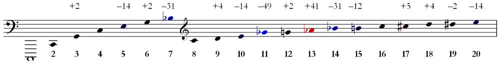
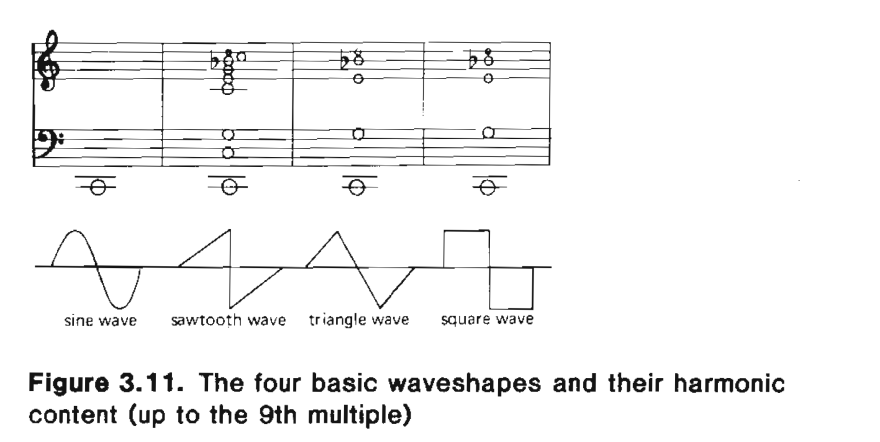
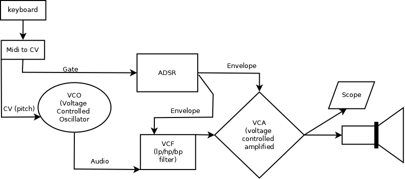

Table of Contents
- 1. Overview
- 2. Audio Synthesis
- 3. Exploring harmonics: https://teropa.info/harmonics-explorer/
- 4. Musical Signals
- 5. Modulation
- 6. Parametric Design
- 7. DSP
- 8. Advanced Synthesis Techniques
- 9. Project work
Introduction to the subject of electronic music
1 Overview
1.1 Course Structure
The lectures are designed as an introduction to Electronic Music, Sound Design and Creative Programming. There are 10 dates for lectures that allow us to make this brief introduction. Us refers to the teachers, students and me the course lecturer as well as the author of these notes. Throughout the course, an informal and personal way of addressing will be used to explain specific tasks and convey information. This will be familiar to those who have attended lectures at the Vienna Music Institute as well as something new to some who are used to the more formal approach.
One of the key principles we will focus on over the next semester is the idea of parametric design. And, in essence, this series of lectures can be described in detail as a general introduction to some basic principles of parametric design. At lecture 5, this topic will be presented in detail, it will be enough for us now and in the upcoming lectures to get to know the individual modules such as oscillators, filters, amplifiers, sequencers and aspects of control.
1.2 Teaching Philosophy
The subject can be subdivided into the following categories
- Project Organisation
- Sound Design
- Sound Synthesis
- Digital Signal Processing (DSP)
- Function and algorithm design
- Parametric Control
In creating these categories, I’ve tried to represent some of the core principles of electronic music and also to do this in a way that allows some access to the first principles at the root of design and composition.
1.3 A Symbolic Patch Language for Electronic Music
To represent particular concepts, we‘ll be using a graphical patch language throughout the course. It will help to know for now some of the basic elements, objects or modules that we will need to represent.
[osc] <amp> |\env/| *filt* °°seq°° dac|> |<adc
It might help to think about a patch as a kind of instrument, and these modules as the individual parts of that instrument. Surprisingly, it‘s not always immediately obvious to everyone that a guitar is created by setting together a number of parts like: strings, body, neck, fret board, bridge, etc. The manner of construction has been informed by the physical principles of acoustics and also the practical necessities of musicians. In this course it will be of huge advantage to you to understand some basic things about acoustics and your own practical needs as a musician. Of course, we won‘t be making guitars, but as I already mentioned, it helps to think about creating electronic music in terms of putting together instruments and using them to create music.
1.4 Portability
The aim of the lectures is to learn the basics of electronic music. In this sense, we focus primarily on the principles and techniques that apply to the creation of electronic music, and secondarily on the learning of paradigm-specific methods. In any case, basic principles can best be illustrated by practical examples. Sometimes it's easier for me to introduce certain concepts in the classroom with proprietary software. In such cases, the goal should not be to spend all your money on acquiring copies of the software you are using, but to find out how the techniques described can be practiced with freely available software. In the first place, you should use two programs in combination to work through the examples that appear in each lesson and work as homework assignments: VCV Rack and Reaper.
1.5 Reading Material
A very good resource if you want to brush up on some of the basics of the types of mathematics that are found at the root of musical systems
- Gareth Loy, Musimathics vol. I-II, MIT Press
Great reference for many of the essential topics of computer music
- Curtis Roads: The Computer Music Tutorial, MIT Press
Very well written book on modular synthesis, with lots of worthwhile exercises that will form the basis of our practical work throughout the course
- Allan Strange: Electronic Music Systems Techniques and Controls, Wm-C Brown Company Publishers, 1972
2 Audio Synthesis
2.1 Oscillators and Wave-forms
Typically an oscillator will be at the root of a synthesis patch. In order to hear a specific pitch, one can set the oscillator to generate a voltage at the desired frequency. Note that there is also a relationship between pitch and perceived loudness: a tone played at 1024Hz will sound louder than a tone played with the same gain at 64 Hz.
2.1.1 Sine Waves and the Harmonic Series
Come to think of it, this could be a good time to mention the harmonic series, we'll come back to the relationship between pitch and loudness in a minute.

In the world of synthesizers and especially electronic music, an oscillator will typically be looking for a precise definition of pitch in order to produce a tone.
| Pitch name | partial num. | Frequency (Hz) |
|---|---|---|
| c, | 1 | 64 |
| c | 2 | 128 |
| g | 3 | 192 |
| c' | 4 | 256 |
| e' | 5 | 320 |
| g' | 6 | 384 |
| bf' | 7 | 448 |
| c'' | 8 | 512 |
| d'' | 9 | 576 |
| e'' | 10 | 640 |
| gf'' | 11 | 704 |
| g'' | 12 | 768 |
| af'' | 13 | 832 |
| bf'' | 14 | 896 |
| b'' | 15 | 960 |
| c''' | 16 | 1024 |
- base frequency = fb
- partial number = pnum
To calculate partial frequencies along the harmonic series: fx = fb * pnum
- eg: f(11) = 11 * 64 = 704
2.2 A side note on midi to Hertz conversion
Practically speaking, you will rarely have to think about doing these types of conversions from a specific pitch to a midi number. Midi is a really useful protocol that maps an equal tempered tuning system to integer values in the range of (0-127).
3 Exploring harmonics: https://teropa.info/harmonics-explorer/
3.1 Waveform Types
Of course, a spectrum analysis of the tone produced by a musical instrument would reveal the presence of individual frequency components. These are basically packets of energy focused around certain points in time. Pythagoras or Plato or one of those fellows would have probably started waxing lyrical about the harmony of the spheres at this point. The main point here is that you don't need to think too deeply about the concept of spectrum analysis for now, maybe think about it as a type of sonic x-ray that can reveal some interesting truths about the nature of a sound. The whole point of mentioning analysis at all is that it can be quite useful when used in combination with synthesis. If fact the practice of the analytic-synthetic method also goes all the way back to the Greeks. But that's getting slightly off-topic.
To summarize about wave-forms: depending on how they are combined, simple sine-wave components can create more complex wave types. The tones produced by musical instruments sound themselves complex and can be analyzed to reveal the underlying structure. There are a few main types of waveform that are typically found as settings on an oscillator.

3.2 Oscillator Controls
3.2.1 Tuning
- Offset
- Fine-tune
3.2.2 Pitch input
- Midi
- Control Voltage
3.2.3 Frequency Modulation (FM)
We'll go into some more detail about frequency modulation (and modulation in general) later on in the course. It just might be useful to point out that most oscillators will typically have a control for FM.
3.2.4 Pulse width
On the square wave setting, it is possible to control the length of the duty cycle of a square wave. Basically, if we were using the oscillator to open some sort of a gate, the gate would remain open for the length of time that the square wave is non-zero.
_____ _____ _____
| | | | | |
| | | | | |
_____| |_____| |_____| |_____
___ ___ ___
| | | | | |
| | | | | |
_____| |_______| |_______| |________
_ _ _
| | | | | |
| | | | | |
_____| |_________| |_________| |__________
3.3 Additive Synthesis
Very simply put, additive synthesis is the idea of building up complex sounds from very, very simply components. Most typically these are sin tones. The link above connects to an interesting application written in JavaScript. It's possible to see how the combination of different sets of partials can produce specific wave shapes.
3.3.1 Building a Hammond organ
This series of videos describes how to build a Hammond organ style synthesizer using vcv rack: https://youtu.be/kZJF50joo2w
3.4 Subtractive Synthesis
3.4.1 Basic Patch Structure
